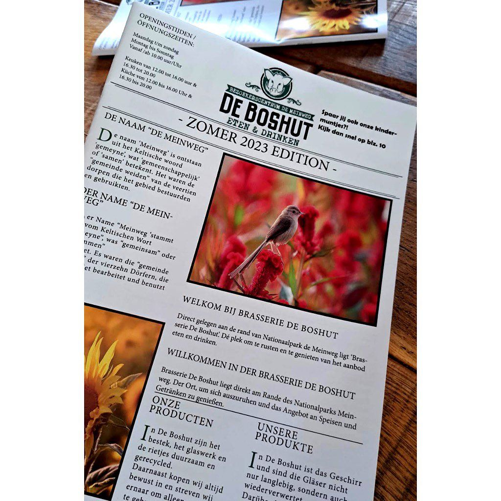

Prinia op de Meinweg
28 juli 2023 · De Boshut Meinweg
- Op de foto
- Prinia
- Het ging over
- Inheemse zangvogel

Bij De Boshut op de Meinweg zijn blijkbaar ook Plain (?) prinia’s te vinden! Hoef je daar in ieder geval niet meer voor naar Azië.
Zelf ook een foutje gezien? Stuur hem dan in!